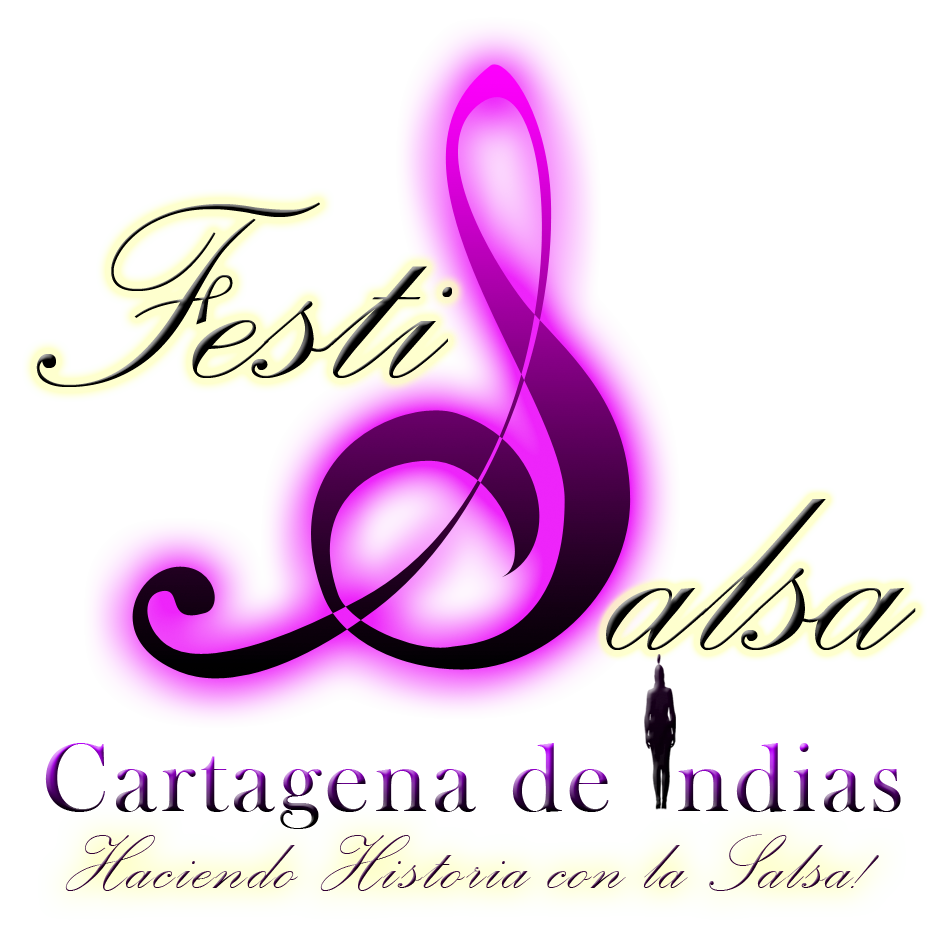
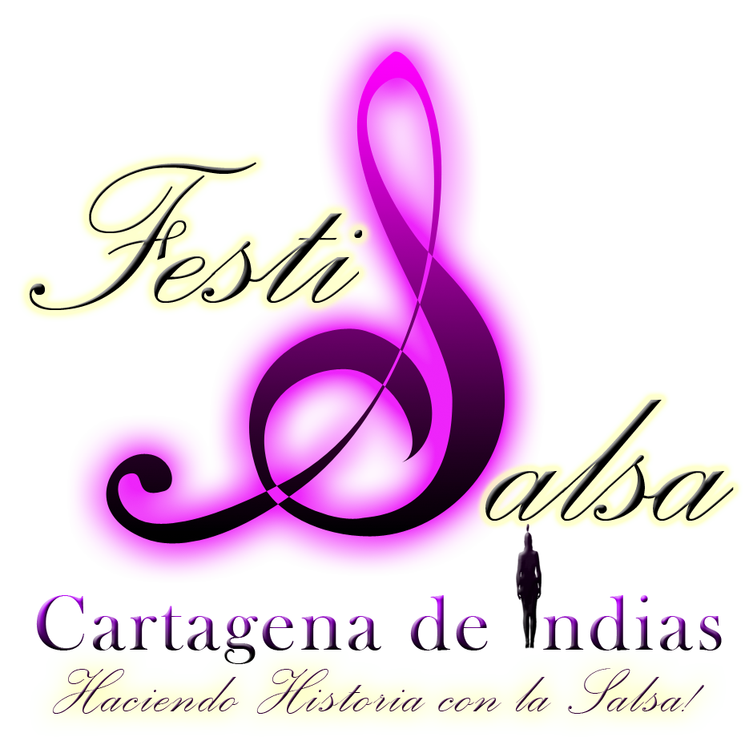

QUE HACEMOS
CREAR
VISIBILIZAR
CONECTAR
INSPIRAR
Festival Nacional de Cultura y Emprendimiento. Promueve emprendimientos Culturales y Creativos valorando y resaltando las diferentes culturas de Colombia y el mundo por medio de las relaciones entre estas. Generando y propiciando espacios de encuentros interculturales e interdisciplinarios
QUIÈNES SOMOS
Un Festival Disruptivo, integrador, novedoso, creativo, flexible y de vanguardia. Radicado en el corazón de la Costa Caribe Colombiana y Latinoamericana: Cartagena de Indias, La Heroica punto de encuentro de todas las culturas.
EVENTOS
El Festival hace posibles los encuentros con los siguientes componentes: cada componente tiene su propia estructura y funcionamiento como si fueran sistemas u órganos de un cuerpo, que actuando independiente cumplen un mismo fin: resaltar la importancia de la Diversidad para la Identidad Cultural, y la Identidad Cultural para el Desarrollo Sostenible de la ciudad y el país. Se estructura en eventos académicos, artístico, sociales. Ambientales y comerciales.


 


EMPRENDIMIENTOS
La Educación y el emprendimiento son base para el desarrollo socioeconómico de una región.
Karib Festival se nutre de la diversidad tecnológica, cultural, social, académica y económica. Espíritu integrador e incluyente. Punto de intersección, tecnológica, económica, artística, científica, gestionando y haciendo posibles cruces de sectores por lo tanto de agentes y por ende la captación de nuevos públicos (publico cruzado) que bien, siendo consumidores de un producto o servicio específico cultural, participa del consumo de bienes alternos y complementarios. Visibiliza emprendimientos, culturales y creativos promoviendo productos y servicios estas industrias.


PERFILES K
Karib Festival promueve perfiles destacados que han dejado y están dejando huellas en el ámbito Cultural y Creativo. en su pais, región o el mundo. Una forma de honrar y revalorizar a los artistas y gestores culturales.
Edgar Garcés
Soy publicista y comunicador visual, especializado en fotografía publicitaría y editorial, al mando de PHOTOGARCES.COM (estudio de diseño fotográfico) localizado en la ciudad de Cartagena de Indias. El área en el que me desarrollo profesionalmente abarca la fotografía artística y editorial, moda, publicidad, retrato y en particular la investigación personal con base en proyectos de orden sociológico-cultural.
Ver Mas
Stanislav Solovkin.
Mi nombre es Stanislav Solovkin. Mi profesión principal es productor de televisión, pero estoy representado en la exposición como fotógrafo. Y debo decir que estoy muy orgulloso de eso. Entonces soy fotógrafo. Y sabes, eso es lo paradójico. Soy un productor ruso, pero el fotógrafo soy definitivamente cubano.
Ver Mas
YERICA VALIENTE
Actriz y modelo Publicitaria
Ver MasTatiana Gutierrez
Soy Tatiana Gutiérrez García, Licenciada en Educación Física y Deporte de la Universidad de Antioquia, Especialista en Gerencia Integral del Politécnico Colombiano Jaime Isaza Cadavid. Entrenadora y Juez, Nacional y Latinoamericana de Baile Deportivo Latino y Standard. Juez Nacional de Salsa deportiva. Delegada Pro-Liga Antioqueña de Baile Deportivo.
Ver Mas
HERNAN JOSÉ PERNETT MONTAÑO
Arquitecto Integral Consultor Hotelero Gestor Cultural Hacedor del Carnaval de Barranquilla Investigador de las tradiciones del Carnaval de Barranquilla Presidente del Grupo Folclórico Cipote Garabato Miembro de la Junta Directiva del Carnaval de Barranquilla Miembro del Comité de Patrimonio
Ver Mas
PEDRO MIGUEL VERGARA AHUMADA
Músico. Director y voz líder del GRUPO K-MBALACHE (Fusión Musical Orquestal)
Ver Mas
GUSTAVO MEZA Y JOSE MANUEL MAZINTOSH
Queremos saludar y agradecer a nuestros amigos de Karib Festival Nacional de Cultura y emprendimiento y al instituto de Patrimonio y Cultura Cartagena por esta pequeña entrevista. Nosotros somos: Gustavo Meza: Soy Coordinador de Modelos de pasarela, Organizador y Colaborador de eventos Jose Manuel Mazintosh: Soy fotógrafo
Ver Mas
Edgar Garcés
Soy publicista y comunicador visual, especializado en fotografía publicitaría y editorial, al mando de PHOTOGARCES.COM (estudio de diseño fotográfico) localizado en la ciudad de Cartagena de Indias. El área en el que me desarrollo profesionalmente abarca la fotografía artística y editorial, moda, publicidad, retrato y en particular la investigación personal con base en proyectos de orden sociológico-cultural.
Ver Mas